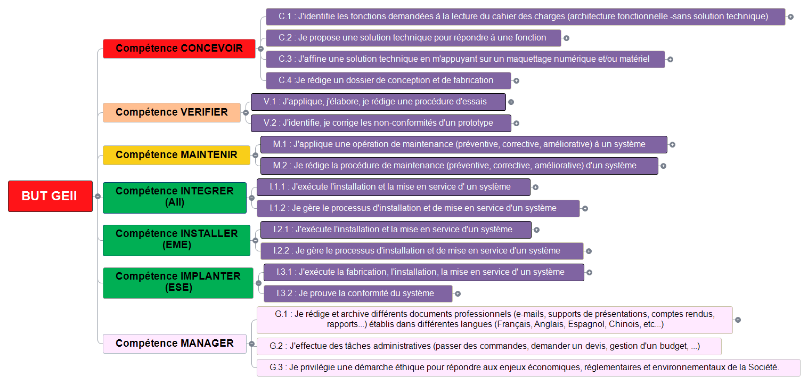

Mes
Compétences
Le parcours Automatisme et Informatique Industrielle (AII) du BUT GEII s'articule autour de 4 compétences majeures : Concevoir, Vérifier, Maintenir et Intégrer.
Parcours AII
Automatisme & Informatique Industrielle
Les 4 Piliers de la Formation
Concevoir
Cahier des charges, solutions techniques, maquettage et dossier de conception.
Vérifier
Procédures d'essais, mesures, identification et correction des non-conformités.
Maintenir
Maintenance préventive, corrective, améliorative et rédaction de procédures.
Intégrer (AII)
Installation, paramétrage, raccordements et mise en service de systèmes automatisés.
Compétence CONCEVOIR
Déterminer les fonctions, élaborer des architectures matérielles et logicielles, valider par maquettage et documenter la conception.
Sous-compétences visées :
Contenu et réalisations à compléter
Cette section sera complétée prochainement avec la présentation détaillée des projets mobilisant la conception (ex: Dossier de Conception DDC du projet MUGOCHAUD, modélisation et dimensionnement du projet Kart à Hélice).
Compétence VÉRIFIER
Définir des protocoles de mesures et d'essais, caractériser les signaux, identifier les anomalies et valider la conformité d'un prototype.
Sous-compétences visées :
Contenu et réalisations à compléter
Cette section sera complétée prochainement avec les comptes rendus d'essais, les relevés de mesures (oscilloscope, multimètre) et les méthodes de correction des non-conformités rencontrées lors des phases de prototypage.
Compétence MAINTENIR
Intervenir sur des installations industrielles, diagnostiquer des dysfonctionnements, effectuer des actions correctives et formaliser les procédures de maintenance.
Sous-compétences visées :
Contenu et réalisations à compléter
Cette section sera complétée prochainement avec les interventions pratiques de maintenance (câblage et dépannage d'armoires électriques, diagnostic d'automates, inventaire technique chez Schneider Electric).
Compétence INTÉGRER (AII)
Gérer et exécuter le processus d'installation, de raccordement, de programmation et de mise en service de systèmes automatisés et de supervision.
Sous-compétences visées :
Contenu et réalisations à compléter
Cette section sera complétée prochainement avec les réalisations d'intégration industrielle (ex: paramétrage de l'automate SIROCCO et mise à jour des plans de contrôle lors du stage chez SNCF Réseau).
Schéma du Référentiel National
Cartographie officielle des compétences du BUT GEII, mettant en avant le parcours Automatisme et Informatique Industrielle (AII).
